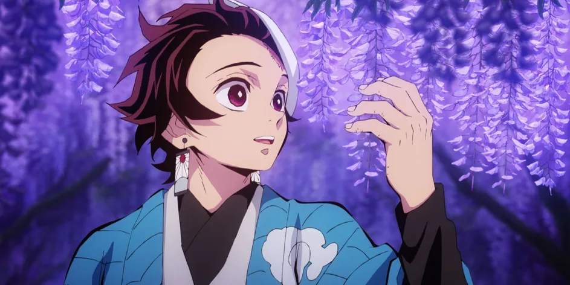

Demon Slayer (150 million sold)
When the first season of Demon Slayer was released, it took the entire world by storm. Produced by Ufotable, the anime has very high-quality animation. So far, every season of Demon Slayer has had excellent pacing, which makes it very interesting to watch.
The success of the anime resulted in an increase in manga sales. After the first season, fans started buying all the volumes of the manga. Presently, the manga has sold 150 million copies, and with another season on the way, this number will only increase further.